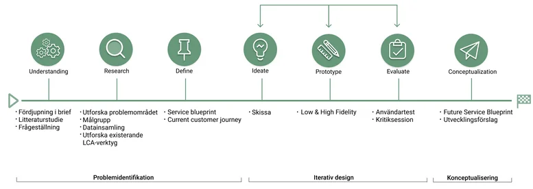
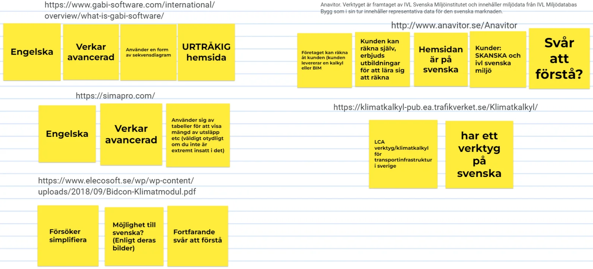
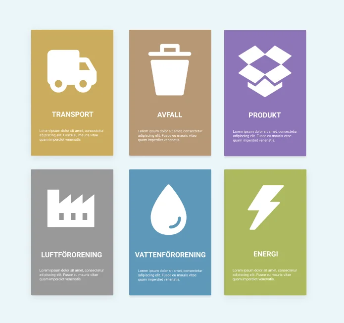
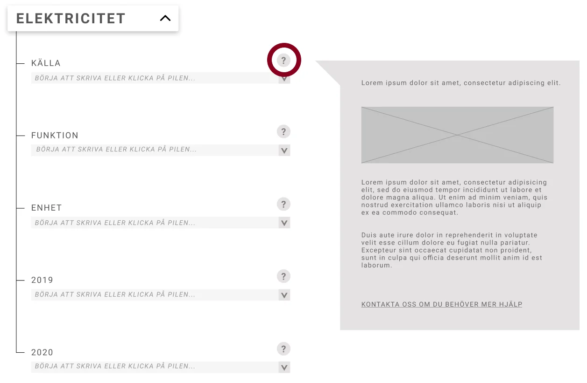
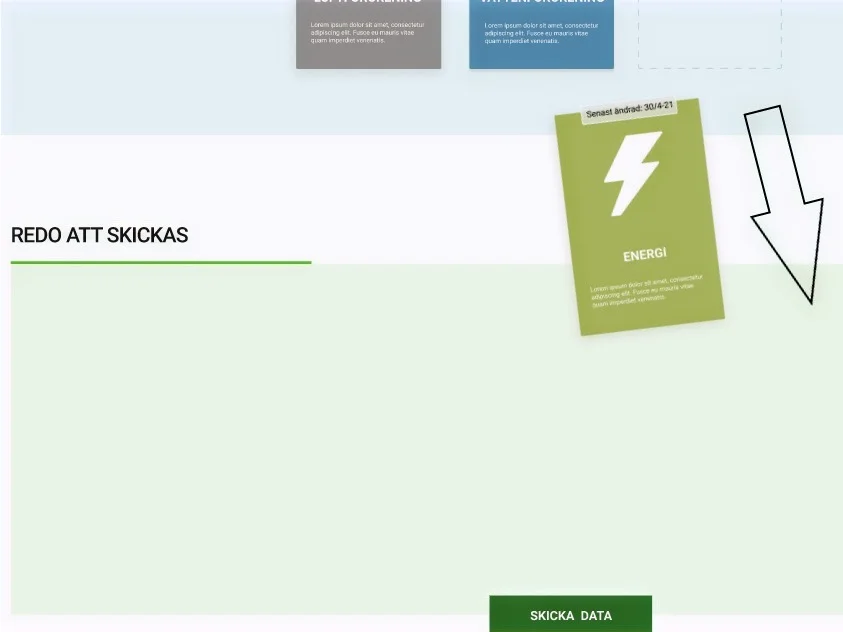

ViaViridi · 2021 · Project Lead
ViaViridi LCA Tool
Making Life Cycle Assessment approachable for construction clients who aren't sustainability experts.

The challenge
LCA and EPD processes are dense, technical, and expensive to navigate: exactly the kind of complexity that keeps non-experts from engaging with sustainability data at all. ViaViridi needed a tool that made the process usable for clients without that expertise.


Process
As project lead, I ran the team through a flexible Double Diamond process adapted for agile iteration, and owned stakeholder communication throughout. Analysing existing tools and user needs pointed to cost, complexity, and language as the real barriers, not a lack of intent.
- Diagnose. Audited existing LCA/EPD tools and user needs, which reframed the problem: clients weren't uninterested in sustainability data, they were locked out of it by jargon and cost.
- Structure. Broke the process into clear categories and rewrote technical terminology into language non-experts could act on.
- Build & align. Owned stakeholder communication throughout, keeping the client and team aligned as the card-based interface took shape.
Key decisions
- Language over features. The barrier was comprehension, not missing functionality, so I prioritised simplifying terminology and structure over adding capability.
- Cards over a form. A single long form would front-load all the complexity at once. The card-based structure let users engage one category at a time, at their own pace.
- Lead with stakeholders. With limited technical resources on the team, I kept the client closely involved at each step rather than presenting finished work: it's cheaper to redirect early than rebuild late.



Outcome
We built a digital, card-based tool that breaks LCA data collection into clear categories users can move through at their own pace, with built-in support so nothing requires prior expertise. Clients could work through an EPD submission themselves instead of relying on a consultant to translate it for them at every step.
Reflection
Leading this project sharpened how I align a team around their individual strengths, and deepened my ability to turn complex sustainability goals into something people can actually use.